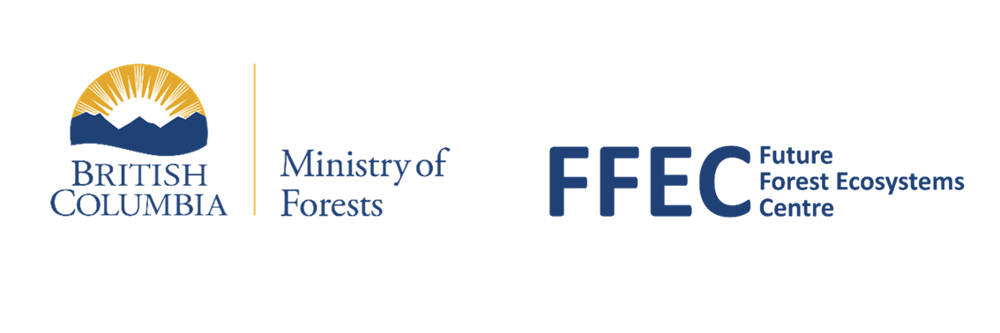

Species Summary Template
Common name (latin name) - species code
<tree image>

Importance in British Columbia
Ecological importance
text
Cultural importance
text
Economic importance
text
Silvics and Ecological Overview
Preferred edatopic conditions (suitability)
<plot: generalized edaphic grid>
summary text
Light, moisture, and temperature tolerance
text
Disturbance tolerance
text
Current and historical distribution in BC
Current biogeographic range
<maps: current (observed) distribution for B2, C4, and D6 edatopes>
summary text: BEC zones where it is currently established
Anthropogenic influences on distribution (?)
text
Current status in BC (?)
text
Projected future shifts in biogeographic distribution
Overall climatic sensitivity
text: adaptive capacity and climate sensitivity
<plot: bubbles of the ensemble mean of each edatope, y = expansion, x = persistence>
Shifts in suitability
text: Shifts in BGC subzone suitability.
<map: overall mean change in suitability (2050s)>
<plot: mean feasibility change boxplot, by BGC zone>
text: Summarize particular areas of interest and/or large change
<map: grey with red highlights on problematic (range contraction) areas>
Elevational patterns
summary text
<plot: gradient of zone suitability shifts up elevations, from CCISS hex grid/elevation raster>
CCISS caveats and uncertainty
text
Other silvics considerations and resources
Tree Species Compendium (BC Gov)
current forest health hazards
link to by-BEC map
climate based seed transfer
bark beetle portal
other pre-existing silvics documents for the species
References
list
Internal: helpful sources for references
Journal articles
BC Gov Tree Species Compendium
Land Management Handbooks (found here)
BC Gov Special Reports and other publications? e.g.:
Gregory, C., A. McBeath, and C. Filipescu. 2018. An economic assessment of the western redcedar industry in British Columbia. Information Report FI-X-017. Canadian Forest Service Canadian Wood Fibre Centre., Victoria, British Columbia
Klinka, K., and D. Brisco. 2009. Silvics and silviculture of coastal western redcedar: a literature review. British Columbia, Ministry of Forests and Range, Forest Science Program, Victoria. (link here)
Nicholson, A., and B. Egan. 1995. Ecology of the Coastal Western Hemlock Zone. Crown Publications, Ministry of Forests
FFEC’s Species Summary reports? Are any of these fully finished/published?
Washington State (and other states, e.g. Idaho, Oregon) Department of Natural Resources, Department of Agriculture, USDA Forest Service, etc
Washington State University ArcGIS StoryMap
Alberta Gov resources?
First Nations knowledge
Where/how to find?
Published literature and books, e.g.,
Lyall, A., H. Nelson, D. Rosenblum, and M. Turin. 2019. Ḵ̓a̱ḵ̓otł̓atła̱no’x̱w x̱a ḵ̓waḵ̓wax̱’mas: Documenting and reclaiming plant names and words in Kwak̓wala on Canada’s west coast. Language Documentation & Conservation 13:401–425.
Stewart, H. 1995. Cedar: Tree of Life to the Northwest Coast Indians. Douglas & McIntyre, New York
Zahn, M. J., M. I. Palmer, and N. J. Turner. 2018. “Everything We Do, It’s Cedar”: First Nation and Ecologically-Based Forester Land Management Philosophies in Coastal British Columbia. Journal of Ethnobiology 38:314
University theses (bachelor’s, master’s, PhD)
Field guides
Other unpublished expert ecological knowledge
Communication with regional ecologists
Other sources?
Make sure to cite CCISS tool and related literature